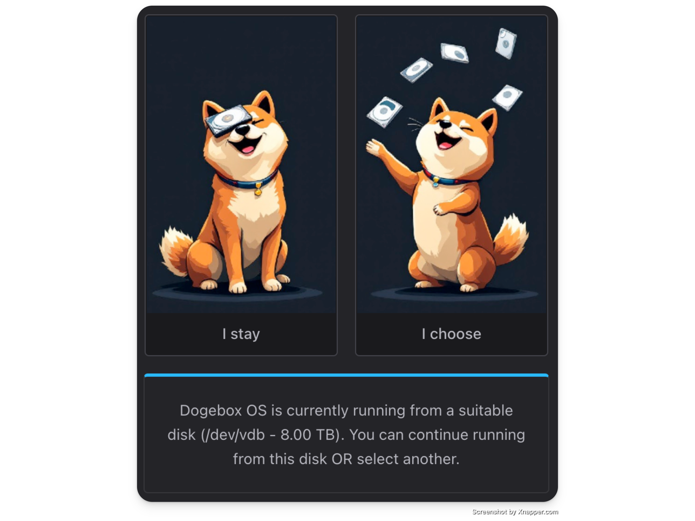
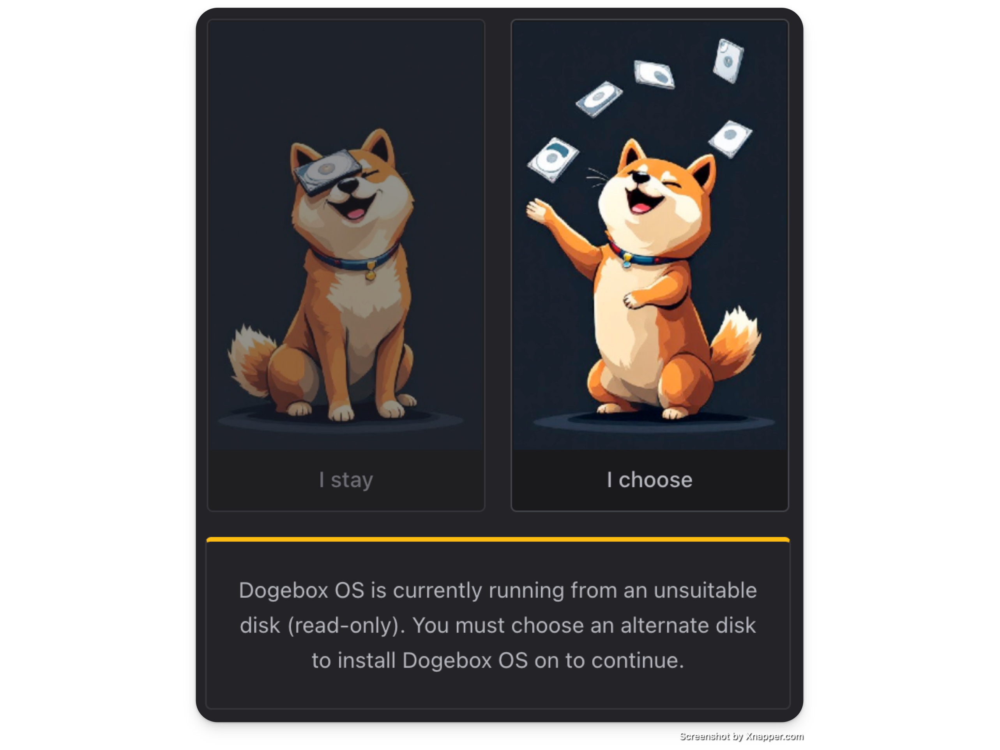
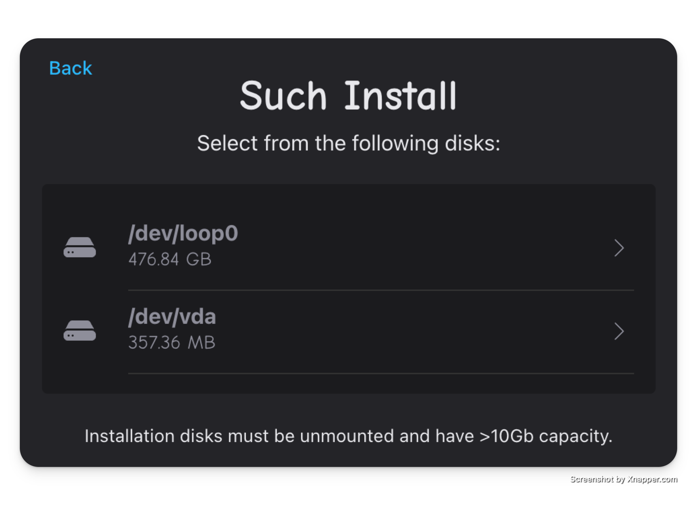
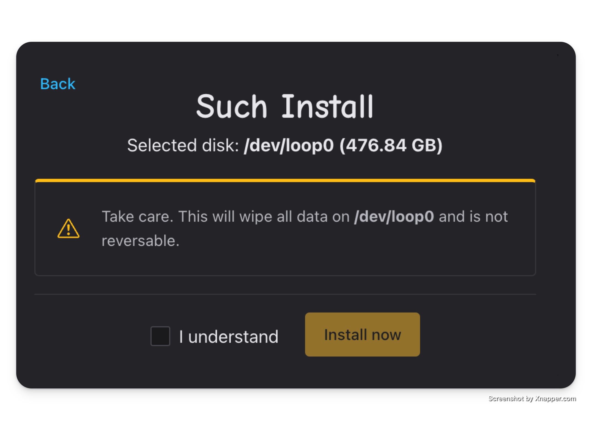
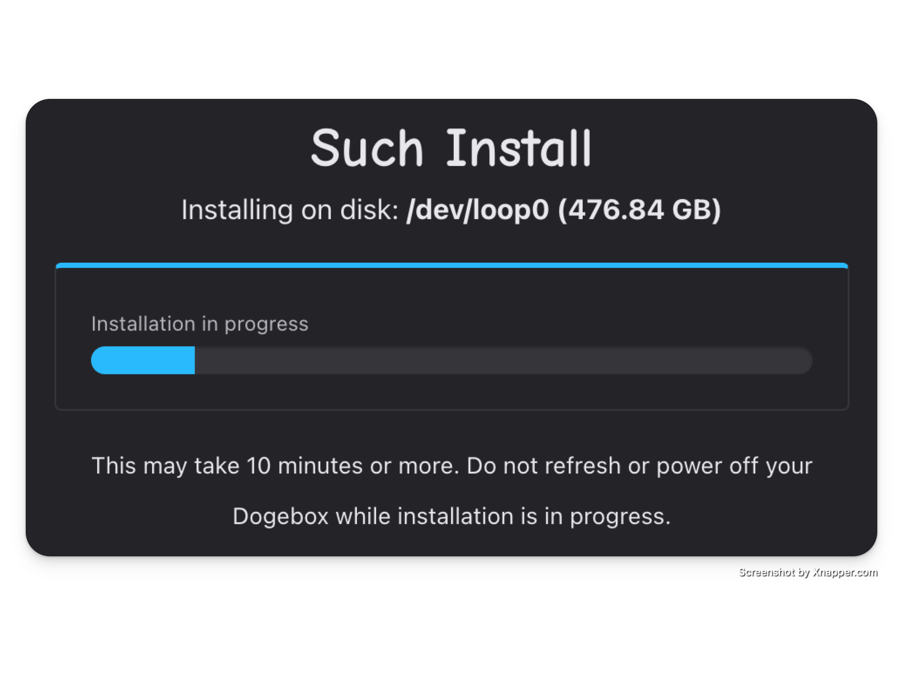
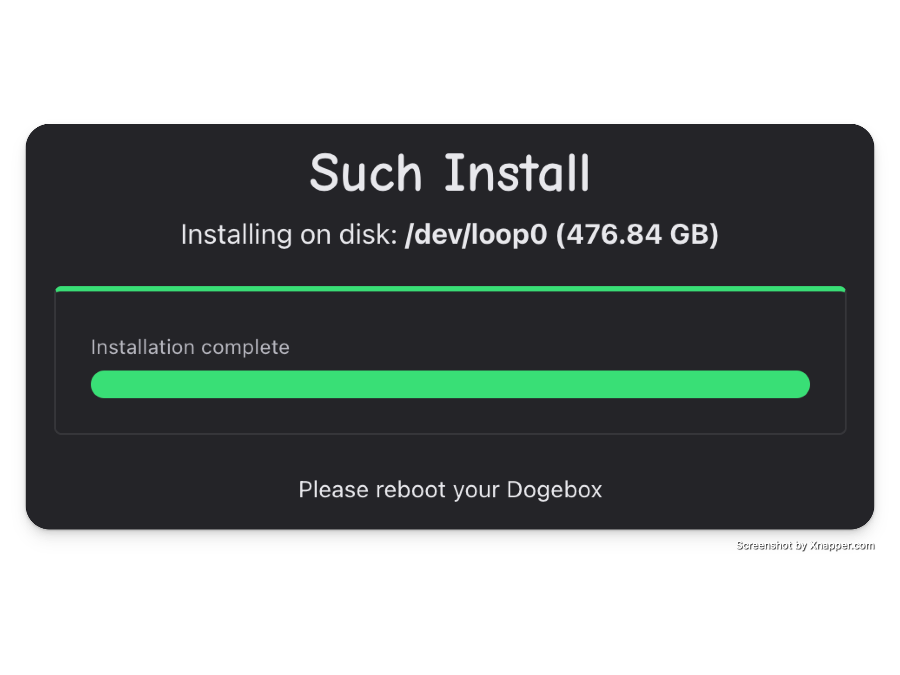

Disk Installation
The first time you boot your dogebox, you'll be presented with one of the following prompts:

If you see this, you're able to continue booting from the current media. If you're satisfied with what DogeboxOS is installed on, you can hit "Stay" and continue following the setup instructions here.

If you see this one, you must install DogeboxOS onto a separate device, as your current boot media isn't compatible with some reason (maybe it's marked as read-only?)
Keep following below.
Select your Disk
Now is the point where you should select the disk you want to install to.
Currently there are some restrictions on which drives show up:
- They must be unmounted, and contain no existing partition table.

Confirm wipe
Once you've selected your disk, you need to confirm that all data on the selected disk will be destroyed

Installation
Sit back and wait for installation to complete, this may take up to 10 minutes.

Reboot
Once you're done, you need to power off your Dogebox and restart it to exit setup/recovery mode.
When rebooted, see Setup Configuration for next steps.
